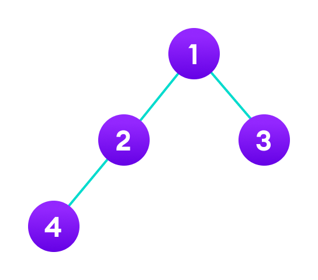

A Tree is a non-linear data structure where each node is connected to a number of nodes with the help of pointers or references.
A Sample tree is as shown below:

Basic Tree Terminologies:
- Root: The root of a tree is the first node of the tree. In the above image, the root node is the node 30.
- Edge: An edge is a link connecting any two nodes in the tree. For example, in the above image there is an edge between node 11 and 6.
- Siblings: The children nodes of same parent are called siblings. That is, the nodes with same parent are called siblings. In the above tree, nodes 5, 11, and 63 are siblings.
- Leaf Node: A node is said to be the leaf node if it has no children. In the above tree, node 15 is one of the leaf nodes.
- Height of a Tree: Height of a tree is defined as the total number of levels in the tree or the length of the path from the root node to the node present at the last level. The above tree is of height 2.
Binary Tree Traversala
- Inorder (Left, Root, Right): 4 2 1 3
- Preorder (Root, Left, Right): 1 2 4 3
- Postorder (Left, Right, Root): 4 2 3 1
Level Order Traversal of a Binary Tree Algorithm:
- Create an empty queue q.
- Push the root node of tree to q. That is, q.push(root).
- Loop while the queue is not empty
- Pop the top node from queue and print the node.
- Enqueue node's children (first left then right children) to q
- Repeat the process until queue is not empty.